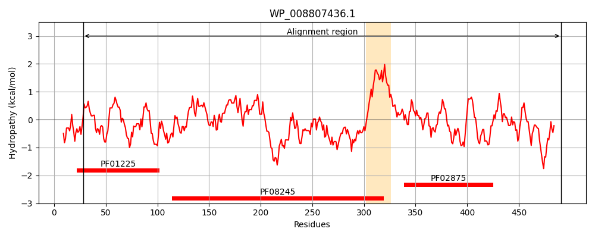
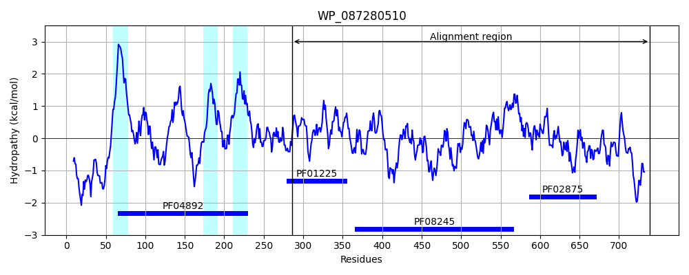
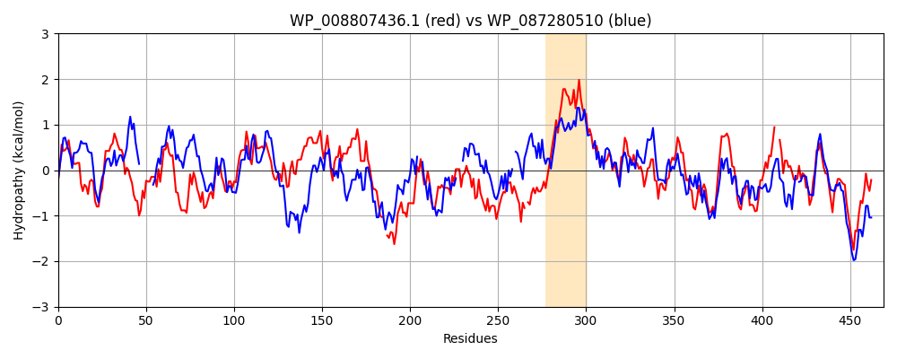

Hit Accession: WP_087280510
Hit TCID: 2.A.128.2.3
Hit Description: gnl|BL_ORD_ID|21541 gnl|TC-DB|WP_087280510.1|2.A.128.2.3 UDP-N-acetylmuramoyl-L-alanyl-D-glutamate--2,6-diaminopimelate ligase [Eubacterium sp. An3]
Mach Len: 469
e:0.000000
Query TMS Count : 1
Hit TMS Count: 3
TMS-Overlap Score: 0.000000
Predicted Substrates:None
BLAST Alignment:
Score: 563 , Bit scores: 221 bits, E-value: 2.8e-64, Alignment length: 469, Percentage identity: 31
Query: 28 DSRVAASGDLFIAVQGHQADGRRYIPQAIAQGVAAIIAEAQGEAEDGEIREMHGVPVIYLSQLNERLSALAGRFYHQPSQQLRLVGVTGTNGKTTTTQLLAQWAKLLGETSAVMGTVGNGLLDKVVPTENTTGSAVDVQHVLSSLVGQGATFGAMEVSSHGLVQHRVAALQFAASVFTNLSRDHL--DYHGDMEHYEAAKWLLYSTHHCGQAIVNADDEVGRRWLAKLPDAVAVSMEDHINPNCHGRWLKATAVNYHDSGATIQFD-SSWGNGEIESRLMGAFNVSNLLLALATLLALGYPLADLLKTAARLQPVCGRMEVFSAPGKPAVVVDYAHTPDALEKALQAARLHCSGKLWCVFGCGGDRDKGKRPLMGAIAEEFADIVVVTDDNPRTEEPRAIINDILAGM--LDAGHAKVMEGRAEAVTNAVMQAKENDVVLVAGKGHEDYQIVGNRRLDYSDRVTVARLL 491
DSR A G +FI ++G DG + +A +G A ++ E + + V VI + ++ ++ ++ P+++L + VTGT GKTTTT ++ + G + V+GT+ + DK + NTT + D+ +V G ME SS G R A ++F +FTNLS DH+ + H D Y + K +L++ C + N DDE AK AV + R T D + FD S NG + + G FNV N L A+ L +G L+ ++ + V GR+++ ++VDYAH ALE L+ R + +L +FGCGG+R K +R MG ++ AD+ ++T DNPR EEP+AII+DIL G+ D + +++ R EA++ + A+ D+V++AGKGHE YQ + ++ S+ V +L
Sbjct: 286 DSRKLAEGCMFICIKGASFDGHTFAEEAAKKGAAVLLVEDPVDVPET-------VTVIQVESTRYAMALVSAAWFGHPAKELTTIAVTGTKGKTTTTYMIQALLEKAGHKTGVIGTIEVVIGDKHIAVNNTTPESYDIHRYFREMVDAGCDAVVMEASSQGFKLDRTAGIEFDYGLFTNLSPDHIGPNEHKDFAEYLSCKAMLFT--QCKKGFANLDDEHFEEITAK---AVCPVQTFGLAEGADLRAQNITLTRDTDF-LGVDFDVSGLLNGRVSCGVPGTFNVHNALGAICVALEMGADLS-MINEVLKTFTVKGRVQIIPTGYDYTLIVDYAHNAVALESILKTLREYHPARLISLFGCGGNRSKLRRFEMGEVSGRLADLTIITSDNPRFEEPQAIIDDILTGIKKTDGEYISIID-RREAISYVMHHAQPGDIVILAGKGHETYQEIKGQKYHMSEEEIVQDVL 739 | Protein Hydropathy Plots: |
|---|
|  |  |
Pairwise Alignment-Hydropathy Plot:
|
|---|
|  |